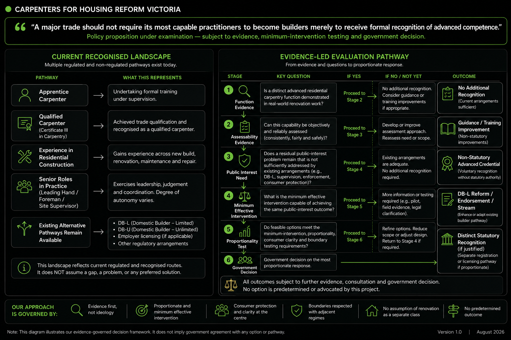

Advanced carpentry competence
- Existing-building diagnosis
- Concealed-condition recognition
- Renovation sequencing
- Temporary support awareness
- Advanced trade execution
- Evidence capture
- Scope escalation judgement
Victoria recognises the foundational carpenter qualification and the wider responsibilities of registered builders. What is not clearly recognised is the higher-level carpenter who has i[...]
"These capabilities may overlap, but they are not interchangeable and should not be treated as a single progression outcome."
The occupational progression gap helps explain why the practitioner-function question warrants investigation. It does not, by itself, establish the case for regulatory intervention or an[...]
"A major trade should not require its most capable practitioners to become builders merely to receive formal recognition of advanced competence."

Certificate III in Carpentry is the essential trade foundation. It establishes substantial practical competence and contains individual competencies relevant to demolition, repair and al[...]
Certificate III establishes core carpentry skills across new and existing construction contexts.
The qualification includes individual competencies relevant to demolition, repair and alteration work.
Workplace experience during apprenticeship varies significantly. Graduates may have limited exposure to complex existing-building renovation environments.
Certificate III does not carry a specific designation recognising independently assessed advanced residential renovation competence.
Duration of experience establishes eligibility to be assessed. It does not by itself demonstrate the required competence standard.
The type, complexity and diversity of renovation work undertaken is relevant to the assessment of advanced capability.
Claims of advanced competence require independent verification through documented assessment, not self-declaration alone.
Demonstrated ability to recognise the limits of scope and appropriately engage builders, engineers and specialists is itself a component of advanced competence.
The following case summaries are drawn from practitioner experience. They illustrate the type of existing-building judgement required in advanced residential renovation work. They are pr[...]
Original apparent scope: Localised flooring repair.
Discovery: Extensive concealed decay, failed ventilation and structurally compromised floor framing.
Decision: Expand investigation to sound structural boundaries and rebuild rather than patch.
Capability demonstrated: Hidden-condition diagnosis, structural risk recognition and scope reassessment.
Original apparent scope: Localised termite or external-wall repair.
Discovery: Progressive concealed damage extending through adjoining structural areas.
Decision: Stage investigation and reconstruction while determining the real damage boundary.
Capability demonstrated: Termite warning-sign recognition, sequencing, temporary stability awareness and escalation.
Original apparent scope: Standard bathroom renovation.
Discovery: Rot, damaged floor or wall substrates, unsafe services and unsuitable wet-area conditions.
Decision: Stop finishes, rectify structure, engage relevant trades and revise the sequence.
Capability demonstrated: Wet-area substrate assessment, multi-trade coordination and consumer scope communication.
Original apparent scope: Internal fit-out based on supplied plans.
Discovery: Undocumented walls, bricked-up construction and a concealed chimney conflicting with the planned stair.
Decision: Stop the planned sequence, investigate and redesign the work path.
Capability demonstrated: Existing-building interpretation, adaptive planning and professional coordination.
Original apparent scope: Replace ageing cladding.
Discovery: Asbestos, missing insulation, deteriorated framing and unsuitable substrates.
Decision: Escalate hazardous-material removal, repair the envelope and revise scope before installing new cladding.
Capability demonstrated: Hazard recognition, specialist handoff and building-envelope sequencing.
The following entry criteria are proposed as the basis for advanced assessment. Final criteria would require government, regulatory and legal development.
Demonstrated foundational carpentry trade qualification or formally recognised equivalent.
Evidence of time in the trade from the start of apprenticeship, verified by independent means.
A documented portfolio demonstrating a range of residential renovation projects, including complex existing-building environments.
Independent assessment of technical competence and diagnostic capability in existing-building renovation contexts.
Demonstrated understanding of the practitioner's legal scope, mandatory escalation points and the responsibilities of builders, engineers and licensed trades.
Demonstrated ability to document scope, record discoveries and communicate clearly with consumers about changes in scope or risk.
Evidence of appropriate escalation to builders, engineers, building surveyors or specialist trades in prior work.
Future mature-model principle if formal recognition is adopted on an ongoing basis, covering technical knowledge, regulation changes, evidence and consumer protection obligations.
Acceptance of audit, complaints and oversight mechanisms as a condition of recognition.
The evidence paper does not presume that a completely new statutory category is the only solution. Government should first assess the capability level itself and then examine whether it [...]
Advanced carpentry recognition and domestic builder registration serve different but overlapping purposes.
Advanced Residential Carpenter — independently assessed is the capability level. Registered Residential Carpenter is one proposed recognition pathway for that capability. DB-L and DB-U r[...]
A carpenter could pursue either pathway according to their intended role. Advanced carpentry recognition would not replace, guarantee or become a prerequisite for DB-L or DB-U registration[...]
The final statutory mechanism for advanced carpentry recognition remains unresolved. Advanced assessment does not automatically grant builder authority, and domestic builder registration c[...]
The progression gap therefore supports investigation of the practitioner-function question. It is not treated as conclusive evidence that government should create a new class.
These questions are presented for government and regulatory consideration. They are not rhetorical. Each reflects a genuine regulatory question requiring analysis.
Does Victoria recognise any higher occupational level within carpentry after Certificate III?
Is domestic builder registration intended to function as advanced carpenter recognition?
Does current DB-L Carpentry assessment distinguish renovation competence from new-build competence?
Could a renovation-specific stream, endorsement or revised assessment be attached to an existing registration framework such as DB-L Carpentry?
How should qualified carpenter identity be preserved while maintaining builder, engineering and specialist boundaries?
Should advanced renovation-carpentry recognition operate through RRC, DB-L reform, an advanced credential or another proportionate mechanism after the capability question is test[...]
The evidence paper defines the potential occupational gap. The Government Decision Pathway explains how that gap can be tested without committing prematurely to a permanent registration mo[...]
Version 0.1 is an evidence-development paper. Verified findings, supported interpretations and unresolved regulatory questions are distinguished. The paper will be updat[...]